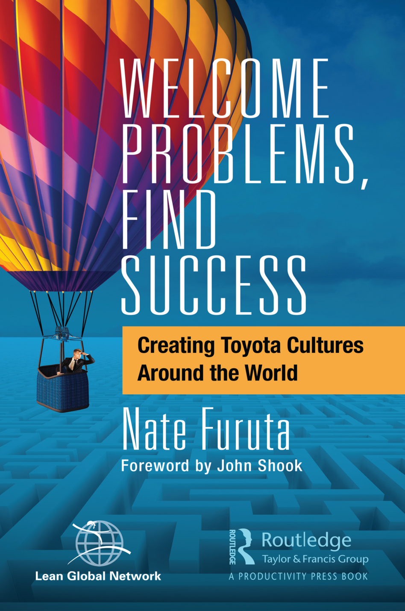

费老师拆书系列 · 第 1 本《欢迎问题，收获成功》。把一本书读厚，再拆薄。 这一本，是丰田高管亲手写的建厂笔记。
为什么翻开它
前几天去一家工厂，老板陪费老师转车间，一路挺自豪，末了来一句：费老师，我们厂现在挺好的，没什么大问题。
费老师听完，心里咯噔一下。
不是嫌他，是职业病又犯啦。因为这句话，正好撞上费老师最近在啃的一本书里的原话，丰田人常挂在嘴边的一句：宣称自己没有麻烦的人，才有最大的麻烦。
这本书叫《Welcome Problems, Find Success》，费老师给它翻成《欢迎问题，收获成功》。作者 Nate Furuta，在丰田干了整整 37 年，是 NUMMI（丰田和通用的合资厂）和肯塔基 Georgetown 工厂的建厂主帅。

（连封面都藏着深意——一个人坐着热气球，飘在一片蓝色的迷宫上方。迷宫就是问题，敢升起来俯瞰它、欢迎它的人，才找得到出口。）
费老师最近想做件小事，把这些年压箱底的精益经典，一本一本地读厚、拆薄，拆成能真带回车间用的东西。这是第 1 本。老规矩，读厚拆薄，咱们走一回。
读厚：溯到源头
市面上讲丰田的书、讲精益的课，多如牛毛。但说实话，十有八九是转述的转述，二手的二手，喝到嘴里早就兑了好几道水了。
费老师读书有个毛病，非得往源头刨。这本书为什么值得刨到底？因为Furuta不是坐办公室写 PPT 的顾问，他是真的在美国从一片空地上，把工厂和文化一起种出来的人。书里写的不是理论，是他自己踩过的坑、打过的仗、掉过的泪。
刨到源头，费老师才刨出这本书最反常识的一个细节。
丰田当年派去牵头海外建厂的第一负责人，是一个管人事（HR）的高管。这在丰田历史上，头一遭。
你品品这事。盖厂房、上产线、调设备，随便哪样听着都比”管人事”更像建厂的正经活吧？可Furuta想透了一件事，一个新工厂能不能成，真不取决于设备多先进，而取决于——这群人愿不愿意去找自己的问题。而这个，不会自然长出来，得先把人的行为掰过来。
一本书能让你重新理解一件你自以为懂的事，这就叫读厚了。
拆开：挑三个亮点
费老师读完，划了满书的重线。挑三个最戳的，跟你唠唠。
亮点 1｜你觉得”没问题”，很可能只是目标定得太低了。
书里给”问题”下了个特别朴素的定义：问题，就是现状和愿景之间的那个差距。
顺着这个定义想，你就懂了那位老板为啥觉得”没问题”。不是真没有，是他心里那根标杆立得太矮，够得着的地方当然一片祥和。
丰田反着玩。它专门抛一个”看起来有点荒谬”的愿景，硬把问题逼出来。最经典的就是普锐斯，当年丰田英二（Eiji Toyoda）拍板，三年内做出一台油耗翻倍的车，底下全懵了，按现有路线根本不可能。可正是这个”不可能”，逼出了整套混合动力。
所以啊，一个组织天天喊”我们挺好没问题”，往往不是它真好，是它给自己定的目标，实在太安全了。
亮点 2｜没有互信，员工一辈子不会跟你说真问题。
这一点，费老师最想拍给所有老板看。
老板们特别爱问一句：为什么下面的人从来不主动跟我讲问题？开会都说好好好，出了事才发现窟窿早就在那儿了。
书里的答案很扎心，因为你没让他敢说。
Furuta讲了个故事，费老师看到那儿是真的鼻子一酸。1974 年石油危机，丰田那年利润比上一年暴跌了 80% 以上。什么概念？换成一般企业，年终奖早没影了，裁员通知都该发了。可丰田呢，仍然照付了之前承诺的、6.1 个月的年终奖。
丰田英二就一句话：员工不应该被欺骗。
Furuta说，互信这东西，是组织的”加速挡”。它不是喊出来的，是你在最难、最有理由不认账的时候还咬牙兑现了承诺，一次一次，从员工心里”挣”出来的。你连这步都舍不得，后面什么看板什么改善，全都会空转。人心不在你这边，他凭什么替你去找问题、担风险？
亮点 3｜KPI 不是越多越好，是越少越准。
这一点，特别适合那些考核表恨不得排到 Excel 第 50 列的公司。
书里有个数字，费老师看到直接乐了。丰田日本，几十年，就只用一个制造 KPI，生产率。就一个。质量、安全、士气这些，全都不单独考核，而是当成推动生产率的驱动因子。靠死磕这一个指标，丰田生产率近半个世纪每年提升 3 到 5 个百分点。
反面例子也在书里。Georgetown 工厂当年从各部门收上来 250 个候选 KPI，最后千辛万苦砍到 16 个。你以为这是精简的胜利？Furuta说，16 个还是太多了。
16 个 KPI，真不如 1 个。 指标一多，人的劲儿就散了，最后谁都在忙、谁都达标、可整体就是不见好。
拆薄：搬进车间
三个亮点读得再爽，光看没用。费老师读书的另一个毛病，是读完非得把它拆薄，薄到能塞进班组长口袋、明天就能用。
这本书费老师拆下来，最先能上手的，是那张**「九个互信行动自评表」**。
Furuta把”怎么挣来互信”拆成了九个具体动作，不回避艰难决策、诚实、信守承诺、稳定就业、给冲突一个解决机制……费老师把它做成了一张能填的表，左边是九个动作，右边是”你们厂现在做到了几分（1-5 分）、缺口在哪、下一步谁来补”。老板拿着它开一次管理层会，比听十场互信的课都管用。
配合着，还有一张**「管理能力评估表」**，把一个管理者该具备的 8 大能力、23 个维度全列出来了，评分标准都是现成的，你只管打分、写发展行动。
这些不是费老师凭空造的，全是从书里的原始框架拆出来、翻译成中国工厂能填的话，中英文都标着，方便你对着原书较真。
不光是表单，书里那几张核心模型图，原版全是英文、还印得密密麻麻，费老师干脆一张一张重新画了一遍，中英文对照。比如这张方针管理展开图，一张图讲清楚了怎么把公司的大目标，一层层拆到每个人头上，底下那根横线就是丰田的「抛接球」，上下来回对齐：
 方针管理展开图（费老师中英重绘）
方针管理展开图（费老师中英重绘）
还有这张ROA 价值树，把冷冰冰的财务指标，一直拆到车间里能动手的地方——最狠的是它把安全、质量、人，全都画成了「风险」，这几样根基一塌，赚再多利润都得吐出去：
 ROA 价值树（费老师中英重绘）
ROA 价值树（费老师中英重绘）
还有一张是评估系统汇总雷达图——把安全、质量、流程、人力、资产、成本、环境、维护、内部物流、丰田纲领这 10 个要素的「应然 vs 实然」摊在一屏上，每格叠加过程分与结果分，右边直接列出强项和攻关点。
它的用法比长相更重要：评估本身就是一轮 PDCA。方针和运营 KPI 是 Plan，监控系统是 Do，拿这张表去查是 Check，查出来的改善计划是 Action，再反哺下一轮方针。费老师见过太多企业把评估做成”年度审计”——查完归档，明年再查一次。那不叫评估，那叫留痕。
 评估系统汇总雷达图（费老师中英重绘）
评估系统汇总雷达图（费老师中英重绘）
本月就能动手：给企业的四点实战建议
表拿到手，还得知道先动哪一步。费老师按”这个月就能开干、不用立项不用花钱”的标准，从这本书里挑出四个动作，顺序不能反：
① 先用《九个互信行动自评表》开一次管理层务虚会。 九个动作挨个打分（1-5 分），只做一件事：把分数最低的两条挑出来，定谁在什么时候补。别指望一次补齐，互信是”挣”出来的，一次挣一点。
② 把”改善不让任何一个人失业”这句话，公开说出来、写进制度。 这是全书最便宜也最难的一条——便宜在不花钱，难在你得真兑现。不敢说这句话的公司，后面推什么改善，员工都会理解成”帮老板找理由裁我”，然后集体装傻。
③ KPI 做一次减法：这个季度砍到 3 个以内。 丰田日本几十年只用一个制造 KPI（生产率），Georgetown 从 250 个砍到 16 个还被 Furuta 嫌多。砍下来的指标不是不管了，是降格成”驱动因子”和过程观察项——考核只留那几个真正代表方向的。
④ 等前三条跑顺了，再把愿景抬到”现有路线做不到”的高度。 这是主动给团队制造问题，普锐斯就是这么逼出来的。但必须放在最后：互信没挣够就抬杠，员工感受到的不是挑战，是压榨。
一句话记住这个顺序：先互信，再拆问题，最后才是主动制造问题。 顺序反了，越使劲越糟。
递给你
老规矩，费老师把这本书拆出来的东西，收成一张能贴墙上的单子：
- 先问”我们想创造什么状态”，再去定那个数字目标——状态管理之下，个人会自己找出问题所在并连同改善一起上报；先定数字往下压，等来的只有应付；
- 愿景敢定得”荒谬”一点，才逼得出真问题——丰田英二要”全球第三产量”、奥田硕要”三年油耗翻倍”，逼出来的是普锐斯，不是加班；
- “改善不让任何一个人失业”，这句话要第一个说出口——而且要在任何改善动作开始之前反复讲，讲完了人才肯把问题指出来；
- 越是难的时候越兑现承诺，互信才挣得出来——1974 年利润暴跌 80% 那年，丰田照发 6.1 个月奖金，一分没少；
- KPI 宁可少而准，16 个真不如 1 个——Georgetown 从 250 个候选里选出 16 个，事后仍嫌太多；丰田日本只用一个：生产率；
- 成功之后，别忘了主动给团队制造问题——成功会催生自满，用评估系统和不断抬高的目标，在”看似没问题”处制造问题；
- 顺序不能反，先互信、再拆问题、后制造问题——没有互信就拆问题，员工只会藏；没拆碎就制造问题，团队只会崩；
- 找到问题不算本事，把找问题变成习惯，才算——从”有意识的决定”变成”个人习惯”，这是全书四个承诺里的最后一个。
做产品的、搞运营的、带团队的，都可借鉴哈。
📚 费老师拆书 · 已拆 1 / 首季 12 本 ✅ 欢迎问题，收获成功 ⬜ 丰田参与方程式 ⬜ 创建精益文化 ⬜ 日常管理 ⬜ 丰田式 Dantotsu 质量改善 ⬜ ……
想要文里那张**《九个互信行动自评表》**的朋友，公众号后台回复「互信」，费老师发你，中英文对照、能直接填。
写这篇的这几天，正是三伏天。费老师坐在空调房里码字，脑子里却总想起那些还在高温车间里盯着产线的班组长、在户外顶着日头干活的师傅。他们身上，其实藏着这本书最朴素的道理——一个组织最了不起的能力，从来不是没有问题，而是有一群愿意在最热的地方，把问题一个一个找出来、扛下来的人。
向他们，也向每一个”欢迎问题”的人，道一声辛苦。
流水不腐，改善不止。我们下期再会。
—— 流动智造（FLOWSMART）× 流易数智（EASYFLOW） 费老师

相关术语：方针管理 · Catchball · 互信 · 指标树 · 领先指标与滞后指标 · 状态管理 · 提案制度 · 现地现物